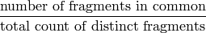
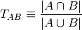
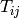

pySIML is designed to compute chemical similarities according to the LINGO method [Vidal05] [Grant06]. LINGO, strictly speaking, is a text-similarity algorithm (similar to the d-squared algorithm for sequence comparison); it is mapped to chemical similarites by representing molecules in some textual format. LINGO characterizes a molecule by taking its textual representation (typically a canonical or canonical-isomeric SMILES string), and breaking it into all its 4-character substrings. To compare two molecules, each is fragmented into its component substrings, and the similarity between the two is defined as:

Or, more technically, consider each molecule A and B to be a multiset, or bag, of these fragments (known as “Lingos”). The Tanimoto similarity between A and B is defined as

Several efficient algorithms to calculate LINGO similarities exist (e.g., [Grant06]), which work especially well when comparing a large number of molecules to only one single candidate molecule. SIML targets a slightly different application area, in which multiple molecules will be compared against the same set of “query” or “database” molecules, either at the same time or sometime in the future (by storing precalculated values). By precalculating part of the computation, SIML saves a large amount of computer time for these repeated searches. Additionally, it allows fast implementation on both standard processors (CPUs) as well as graphics cards (GPUs) and similar vector processors. For more details on the SIML algorithm, please see the publication (pending).
All LINGO algorithms do some preprocessing on the SMILES strings they are given. Typically, ring closure digits will be set to zero (to normalize ring assignment); in some variants (e.g. [Vidal05]), atom names will also be remapped. SIML implements two preprocessing methods, described in Preprocessing SMILES in pySIML.
The motivating task for pySIML is the calculation of a Tanimoto matrix, or matrix whose entries are chemical similarities. Each row corresponds to a molecule from a set called the reference set, and each column to a molecule from the query set. Given a Tanimoto matrix T, the entry at  (row i, column j) is the similarity between reference molecule i and query molecule j.
This model is adaptable to a diverse set of problems in cheminformatics. Performing a database screen (in which one molecule is compared to many others) can be described as calculating a Tanimoto matrix of size 1 x N (one reference molecule, and a number of query molecules equal to the size of the database). A self-similarity matrix, as might be used for clustering a molecule set, corresponds to the creation of an N x N matrix, where the reference and query sets are identical. Finally, a multiple-screen or cross-similarity comparison, in which two distinct sets are compared to each other in an all-pairs manner, is an M x N matrix problem, with M and N being the size of either set.
In addition to the Tanimoto matrices SIML produces as its output, it takes matrices called SMILES sets as input. SIML’s preprocessor/compiler code takes sets of SMILES strings, and converts them to a numerical matrix representation called a SMILES set. Each SMILES set contains 2 matrices and 2 vectors:
- One Lingo matrix contains numerical representations of the Lingos in each SMILES string. Each input SMILES string corresponds to one row in the Lingo matrix.
- One count matrix contains the multiplicity of each Lingo in the Lingo matrix. Each input SMILES string corresponds to one row in the count matrix.
- One length vector contains the number of distinct Lingos in each molecule.
- One magnitude vector contains the total number of Lingos (distinct or not) in each molecule.
In general, it is not important to worry about the internal details of these representations. However, what is useful to know is that it is possible to construct unions and subsets of these SMILES sets. The following code example demonstrates:
# lingos, counts, lengths, and mags have been initialized as a SMILES set
lingoSub = lingos[0:10,:]
countSub = counts[0:10,:]
lengthSub = lengths[0:10]
magSub = mags[0:10]
# lingoSub, countSub, lengthSub, and magSub together now constitute a
# SMILES set for the first ten molecules from the original set
These SMILES sets are constructed from SMILES strings by the pySIML compiler routines (Preprocessing SMILES in pySIML).